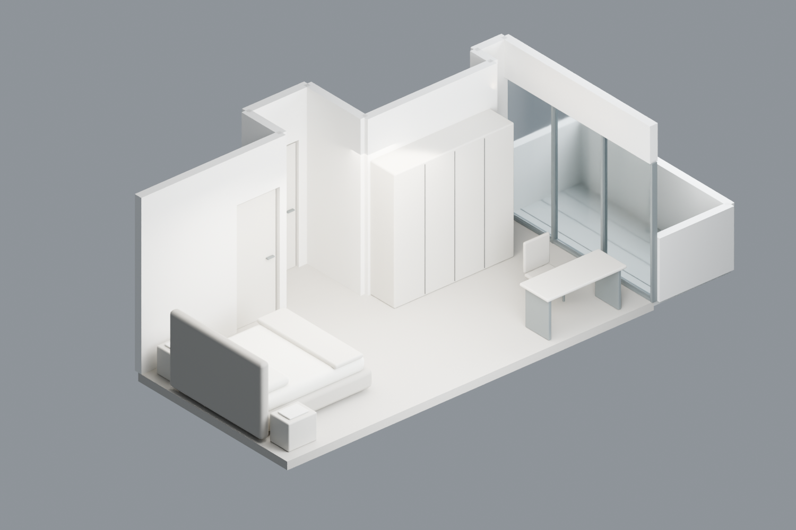

BEDROOM A / STUDY 01
床頭靠左牆，床尾朝陽台
先看空間與配置，再討論材質和風格。

這一版的配置
- 床墊暫以 180 × 200 cm 示意，床頭在左，床尾朝陽台。
- 原左側衣櫃移除；新衣櫃暫放上側凹入牆前。
- 書桌暫放右下窗邊，保留中央到陽台的動線。
模型假設
- 主要室內約 7.15 × 3.40 m，依原圖比例估算。
- 天花採原 PDF 第 65 頁的高低分區，細部簡化。
- 門窗高度、窗框分割、陽台欄板和家具尺寸為示意。
- 這是配置底稿，不是現場丈量或施工圖。
先看空間與配置，再討論材質和風格。
